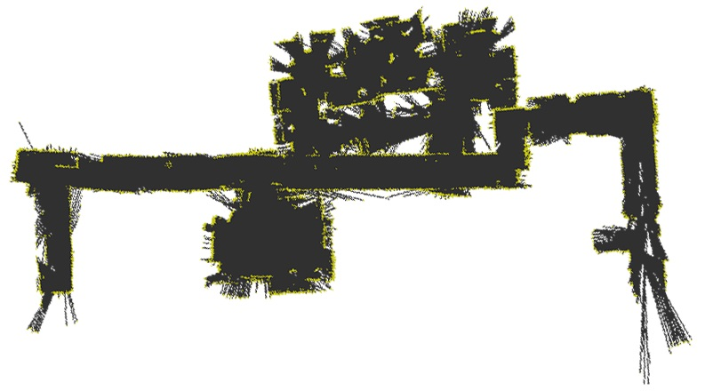
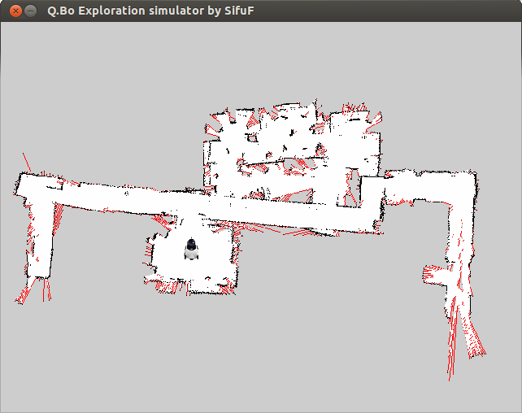
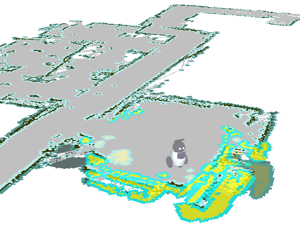
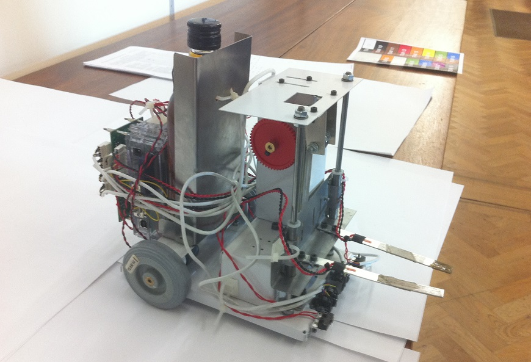
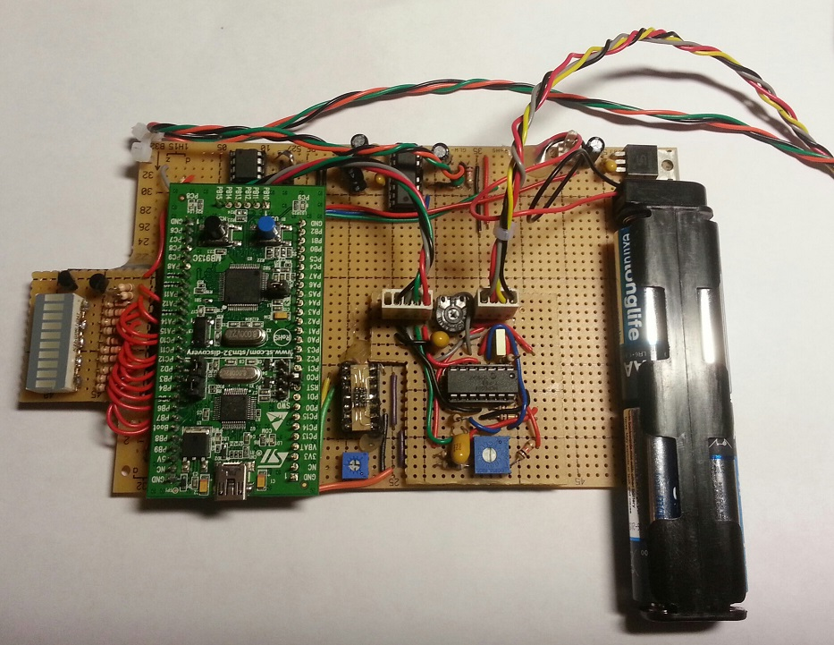
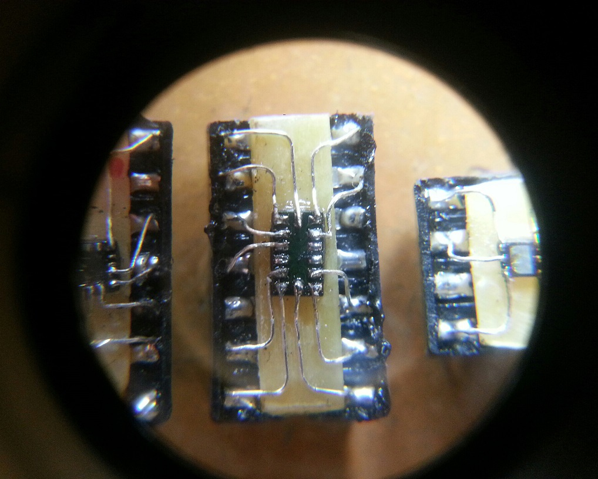
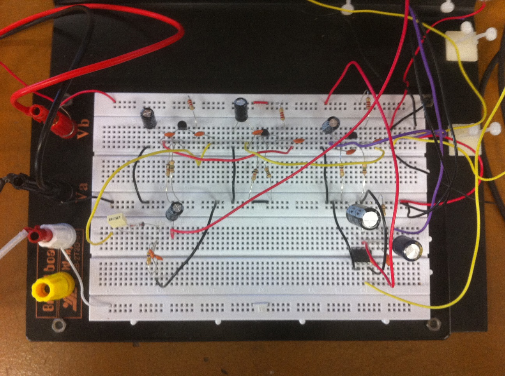
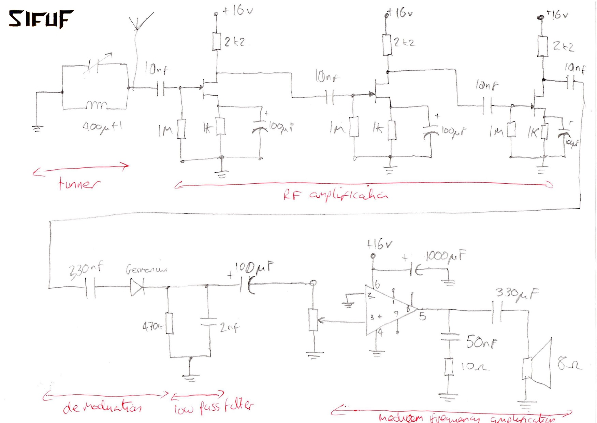

Simultaneous Localisation and Mapping (SLAM)
Intergrating odometry, IMU, and RGBD camera depth data (Asus Xtion -
similar to Microsoft Kinect) as psudo Laser range finder, on the Q.Bo
robot to perform ultra low cost SLAM. Dev on Linux with ROS (Robot
Operating System) and gmapping/hector_SLAM
Example resulting map (Cambridge Engineering department SigProc
corridor)

Path planning and Frontier based exploration


Autonomous guided vehicle project
A line following robot. Designed, built, and tasked with autonomous
item sorting in a constrained playfield. Based on Intel embedded
hardware

FitFriend - mobile health monitoring system
Personal fitness electronic trainer device. Photoplethysmograph heart
rate monitor, accelerometer step counter, incentivised games, calorie
estimation. ARM (STM32) MCU based

'Deadbug' soldered smd components

AM Radio receiver
Simple receiver that works pretty well

The circuit for those playing along at home...

Lego NXT project
'Hooke's Tower' tensions and releases elastic bands, plots height vs
time for suspended mass, measures oscillation period, and derives the
spring constant